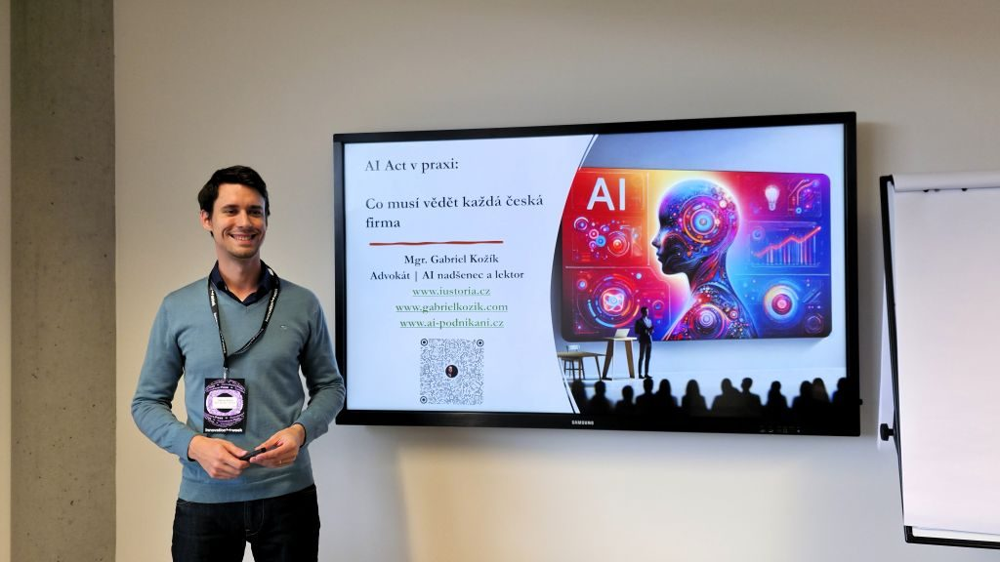
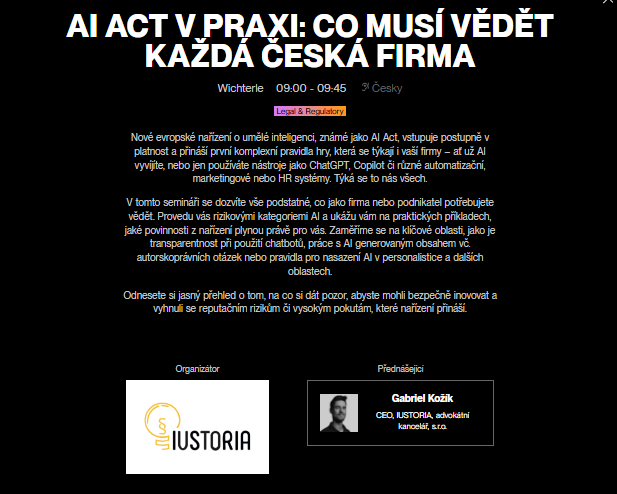
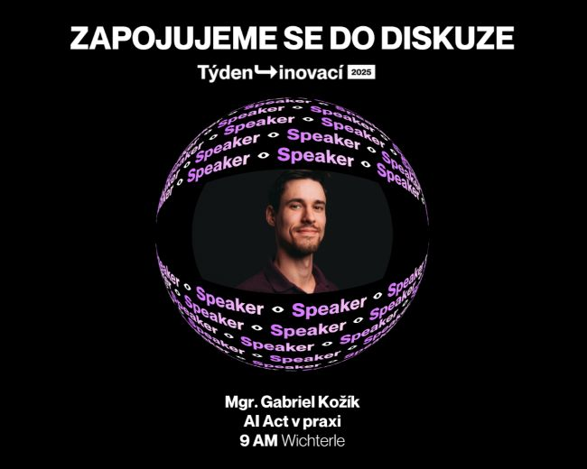

AI Act v praxi: Ohlédnutí za Týdnem inovací 2025
Reportáž pochází z doby, kdy jsem byl společníkem advokátní kanceláře IUSTORIA.
Minulý týden, ve dnech 9. a 10. října, se Praha opět stala epicentrem technologického dění ve střední Evropě. V moderních prostorách ČSOB Kampusu proběhl jubilejní ročník Týdne inovací a já jsem byl hrdý, že naše advokátní kancelář IUSTORIA mohla být u toho jako partner akce. Byla to neuvěřitelná smršť nápadů, vizí a inspirativních setkání.

Regulace, která není strašákem, ale příležitostí
Měl jsem tu čest vystoupit se seminářem na téma "AI Act v praxi: Co musí vědět každá česká firma". Cílem bylo demystifikovat nové evropské nařízení o umělé inteligenci a ukázat, že se nejedná o byrokratickou brzdu, ale o promyšlený rámec pro bezpečné a důvěryhodné inovace. Probrali jsme si klíčové body, které rezonovaly s publikem složeným z podnikatelů a manažerů:
- Přístup založený na riziku: Vysvětlili jsme si, že AI Act nezatěžuje všechny firmy stejně. Největší povinnosti dopadají na vysoce rizikové systémy, zatímco pro většinu běžných AI nástrojů (jako jsou chatboti nebo generátory obsahu) je klíčová hlavně transparentnost.
- Praktické dopady: Na příkladech jsme si ukázali, co znamená povinnost informovat uživatele, že interagují s AI, nebo jak správně označovat marketingový obsah vytvořený umělou inteligencí.
- Odpovědnost a data: Zdůraznili jsme, že odpovědnost za použití AI nese vždy firma, která ji nasadila. To klade obrovský důraz na výběr prověřených dodavatelů a ochranu citlivých dat v souladu s GDPR.


Energie, která pohání budoucnost
Celá akce byla nabitá pozitivní energií. Z každého rohu kampusu byl cítit pulz inovací – lidé se potkávali, sdíleli nápady a domlouvali nové spolupráce. Týden inovací znovu potvrdil, proč je klíčovou událostí pro každého, kdo chce nejen sledovat trendy, ale aktivně tvořit budoucnost českého byznysu.
Děkuji organizátorům za skvělou práci a všem, kteří se zastavili na mém semináři. Už teď se těším na další ročník a na to, jak se myšlenky z letošního setkání promění v reálné projekty.
← Zpět na přehled článků